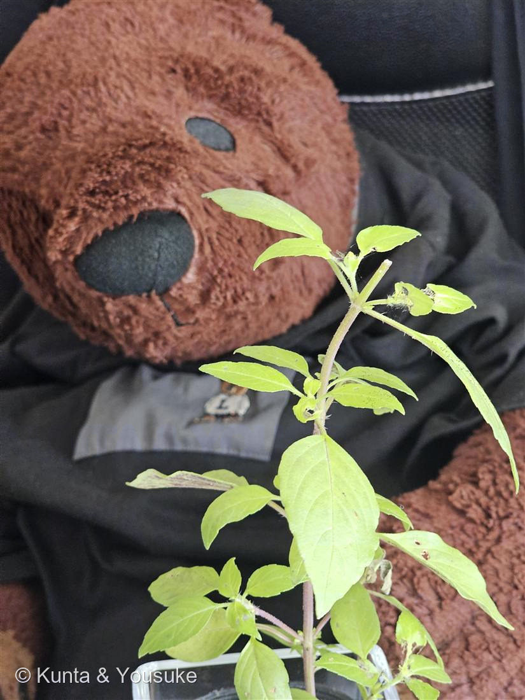
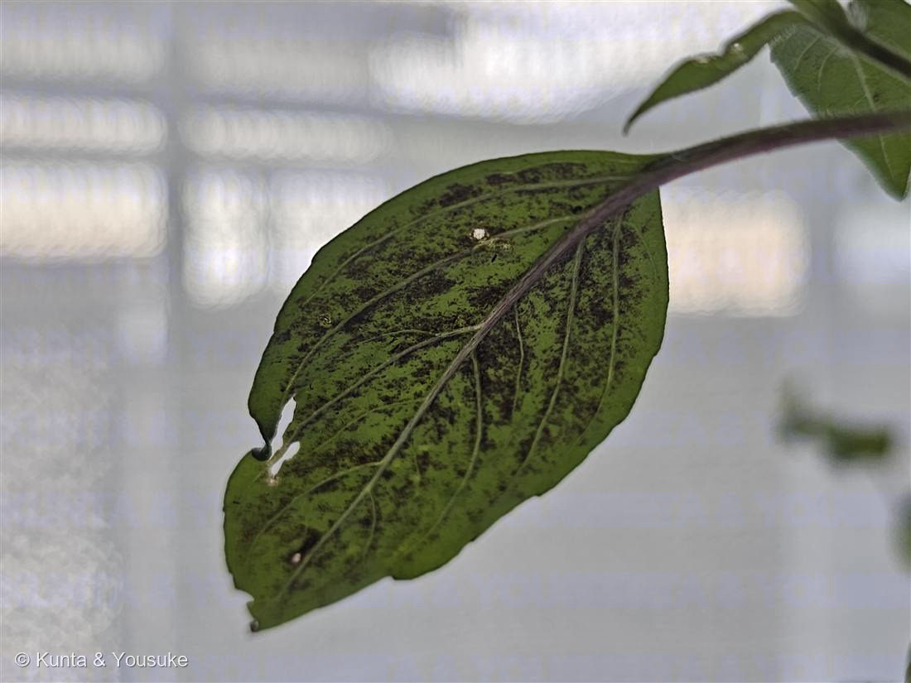

地図を読み込んでいるよ…
🔍 写真も地図も、押しているあいだ拡大して見られるよ（スマホは指を置いてすこし待ってね）。
🌍 の地図＝この子がもともと自生している場所を緑に。インド。
⚠ 地図は国（日本と中国だけ県・省）までしか塗れないから、ほんとうの分布より広く見えていることがあるよ。地図はだいたいの場所。正確なところは、上の文を見てね。
ホーリーバジル
Ocimum tenuiflorum L.（syn. O. sanctum L.）
別名 · カミメボウキ（神目箒）／トゥルシー（Tulsi）／ガパオ（タイ）
シソ科 · Lamiaceae（メボウキ属 Ocimum）
おうちの植物世話：陽介 · 職場の方からのプレゼント“あの有名なガパオライス”のハーブ
名前と学名の由来
- Ocimum（オキムム）＝バジル類を指すギリシャ語 ōkimon に由来する古い植物名。香り高いハーブの総称だった。
- tenuiflorum（テヌイフロールム）＝ラテン語 tenuis（細い・まばらな）＋ flos／florum（花）＝「花がまばらにつく」。長い花穂に小さな花が段々につく姿から。
- 別名の種小名 sanctum＝「聖なる」。ヒンドゥー教で神聖な植物トゥルシーとして祀られることにちなむ。
- 和名カミメボウキ（神目箒）：バジルの種子は水に浸すと寒天状にふくらみ、目に入ったゴミを絡めとる「目の箒（メボウキ）」に使われた。ホーリー＝神聖なので「神・目箒」。
この植物のこと
- シソ科メボウキ属の芳香ハーブ。インド原産で、ヒンドゥー教ではもっとも神聖な植物「トゥルシー」として寺院や家庭で大切にされる。
- 「あの有名な料理」＝ガパオ。タイ料理のパッ・ガパオ（ガパオライス）に欠かせないハーブで、クローブに似たスパイシーな香り（主成分オイゲノール）が特徴。イタリアンのスイートバジル（O. basilicum）とは別種で、香りも使い道も違う（甘いジェノベーゼ ↔ スパイシーなガパオ）。
- アントシアニンで色づく：茎・葉柄・葉裏がうっすら赤紫に染まる（この子はよく出ている）。これはR2R3-MYB系の転写因子が仕切る色素で、紫外線・強い光からの日焼け止め＆抗酸化のはたらき。──No.007シロツメクサの赤い模様と同じスイッチなんだ。品種はラーマ（緑）／クリシュナ（濃い紫）／ヴァナがあり、この子は「緑地＋紫の脈」でラーマ寄り。
- 全体に軟毛（トリコーム）があり、白〜淡い紫の小花を段々に咲かせる。熱帯では多年草だが、寒さに弱いので日本では一年草あつかい。アーユルヴェーダの薬草でもある。
育て方のポイント（日ざしと暑さが好きなハーブ）
- ☀ 光
- 日光が大好き。1日6時間以上の日ざしでこんもり茂る。室内ならいちばん明るい窓（南〜西）へ。光が足りないと徒長して香りも弱くなる。
- 💧 水やり
- 土の表面が乾いたらたっぷり。乾かしすぎると葉がしおれ、過湿だと根腐れ。夏は乾きが早いのでこまめに見る。
- 🌡 温度
- 高温性で20〜30℃が旺盛。寒さに弱く、10℃を下回ると弱る→日本では一年草。屋外は霜が降りる前に切り上げる。
- 🪴 土
- 水はけがよく肥えた土。市販の野菜・ハーブ用培養土でよい。底穴のある鉢で。
- 🌱 肥料 ・ 摘芯
- 葉をたくさん使うので、生育期は緩効性肥料か薄い液肥で追肥。先端を摘芯すると脇芽が増えてこんもり。花穂は早めに摘むと、葉の収穫が長持ちする。
※ハーブ・野菜栽培の一般的な目安。うちの置き場所・季節を見ながら、二人なりに調整しよう。
【うちでは】もらったばかりなので、これから一緒に育てる。うちは西向きの窓にレースのカーテン越し——バジルは日ざしをうんと欲しがるから、レースを開けて直射を当てるか、夏は屋外の日なたに出すのもよさそう。夏は冷房＋SwitchBotで室温22〜23℃・湿度50〜60%（暑さ好きだから、生育はゆっくりめかも）。⚠ハダニに注意して、ときどき葉裏をチェックしてあげる。
参考：RHS「Basil」／サカタのタネ・NHK『趣味の園芸』のバジル栽培情報をもとに整理。